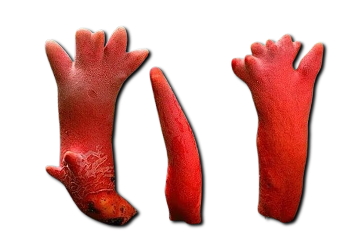
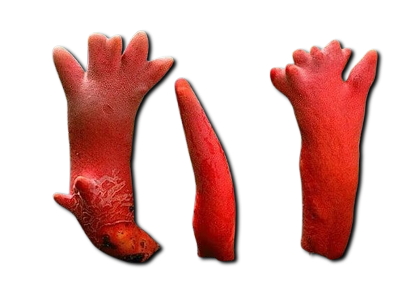

Descripción morfológica
Podostroma cornu-damae, conocido como "hongo cuerno de venado" o "hongo de fuego", es un ascomiceto mortal de la familia Hypocreaceae. Sus cuerpos fructíferos forman estructuras erectas de 2-8 cm de altura, ramificadas como cornamenta, de color rojo sangre a naranja intenso. La superficie es lisa o ligeramente arrugada, volviéndose más oscura (rojo parduzco) con la edad. Los peritecios (estructuras reproductoras) están inmersos en las puntas de las ramas. La carne es coriácea y del mismo color que la superficie, con olor ligeramente metálico. No produce esporadas visibles, ya que las esporas se liberan gradualmente desde los ascos.
Características distintivas
- Morfología: Ramificaciones coraloides que recuerdan astas de ciervo.
- Coloración: Rojo intenso debido a pigmentos tricotecénicos (roridina T).
- Esporas: Hialinas, elipsoidales, de 4-6 × 3-4 µm, con superficie lisa.
- Confusiones: Similar a Ramaria sanguinea (comestible, con esporada amarilla).
Distribución y hábitat
Especie rara originaria de Japón y Corea, reportada recientemente en Java (Indonesia) y Australia. Crece en bosques caducifolios y mixtos, asociada a raíces de árboles del género Quercus y Castanopsis. Prefiere suelos ácidos (pH 4-5.5) ricos en humus, en laderas montañosas entre 300-1,500 msnm. Fructifica de julio a octubre, generalmente después de lluvias monzónicas. Su presencia suele ser localizada, con solo 2-3 cuerpos fructíferos por hectárea en sus áreas nativas.
Condiciones ecológicas
- Temperatura: Óptimo entre 20-28°C para crecimiento micelial.
- Humedad: Requiere >85% de humedad relativa para fructificar.
- Asociaciones: Posible relación parasítica con raíces de árboles.
Toxicidad y mecanismos de acción
Contiene tricotecenos macro cíclicos (satratoxina H, roridina E y verrucarina J) que inhiben la síntesis proteica al unirse a ribosomas. Una sola seta (10-20 g) puede contener toxinas suficientes para matar a un adulto (LD50 = 0.2 mg/kg de satratoxina H). Los síntomas aparecen en 3 fases: 1) gastrointestinal (3-8 horas), 2) leucopenia severa (24-72 h), y 3) fallo multiorgánico (3-7 días). La mortalidad supera el 60% incluso con tratamiento, siendo la intoxicación por hongos más letal de Asia.
| Toxina | Concentración (mg/g) | Efecto principal |
|---|---|---|
| Satratoxina H | 0.5-1.2 | Necrosis hepática y renal |
| Roridina E | 0.3-0.8 | Supresión de médula ósea |
Casos clínicos y tratamiento
Entre 1999-2022 se documentaron 48 intoxicaciones en Japón (32 fatales). El protocolo actual incluye:
- Lavado gástrico inmediato (primeras 2 horas post-ingesta).
- Administración de carbón activado (1 g/kg cada 4 horas).
- Plasmaféresis para eliminar toxinas circulantes.
- Trasplante hepático en casos de necrosis masiva.
Identificación y prevención
- Claves diagnósticas: Color rojo sangre, forma coral ramificada, ausencia de esporada visible.
- Error común: Confusión con hongos coral comestibles (Ramaria spp.).
- Recomendaciones: Evitar recolectar hongos corales rojos en Asia oriental.
Investigación reciente
- Desarrollo de test ELISA para detección rápida de satratoxinas en orina (2023).
- Estudios genómicos sobre biosíntesis de tricotecenos (cluster génico Tri5).
- Uso potencial de toxinas modificadas en inmunoterapia contra cáncer.
Estado de conservación
No evaluado por IUCN pero protegido en Japón como "Especie Peligrosa". Su recolección está prohibida en parques nacionales coreanos. Las principales amenazas son:
- Deforestación de bosques templados asiáticos.
- Colección ilegal por curiosidad o uso tradicional erróneo.
- Cambio climático (alteración de patrones de lluvias monzónicas).